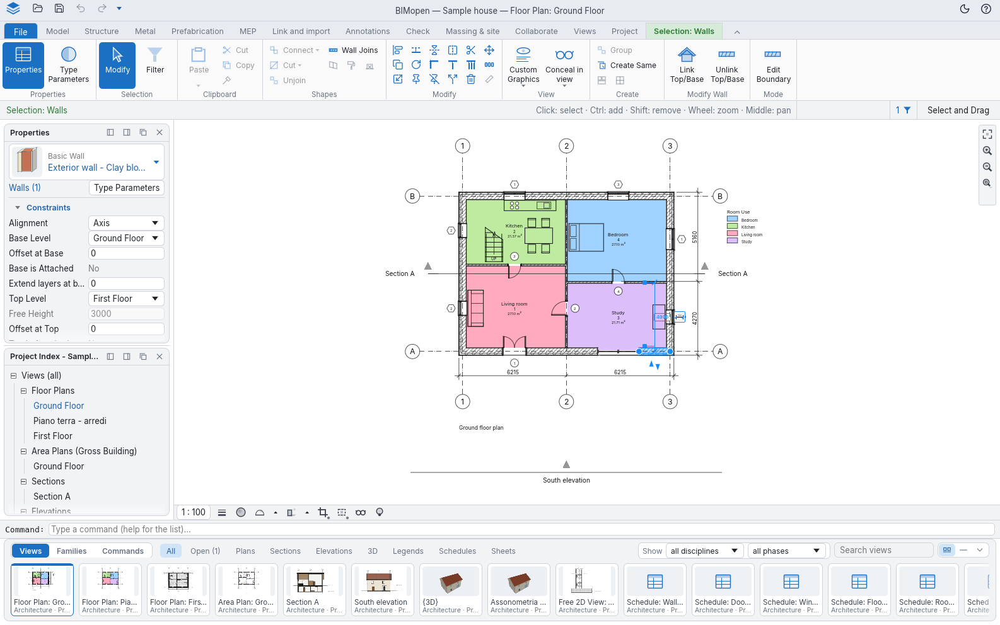
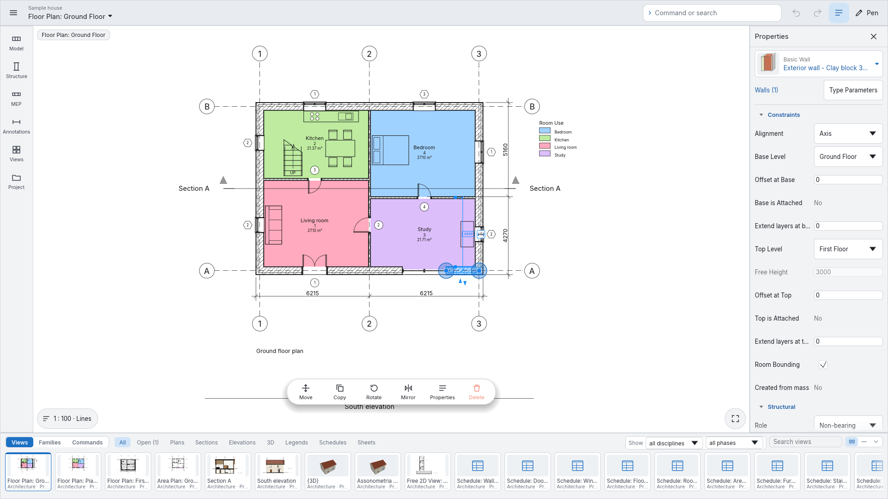
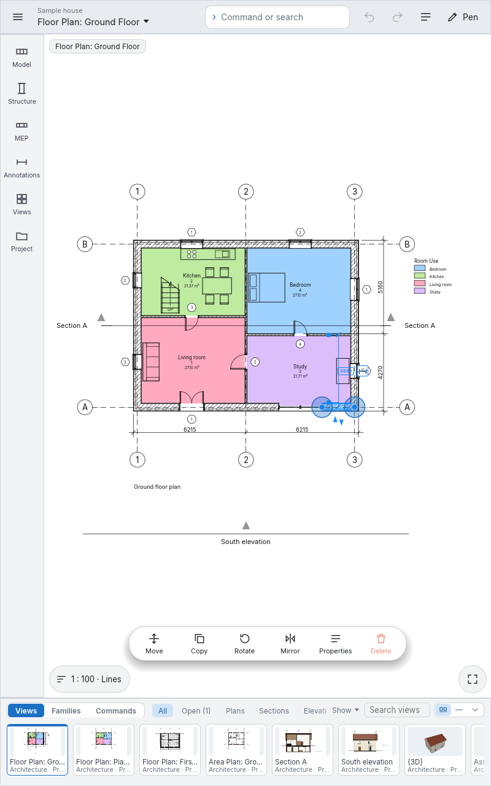
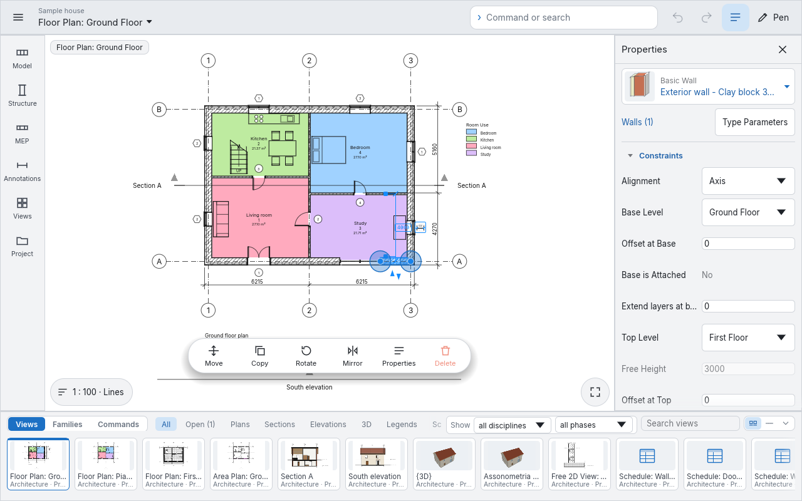
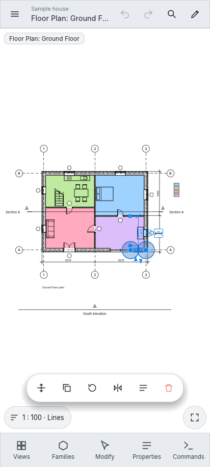
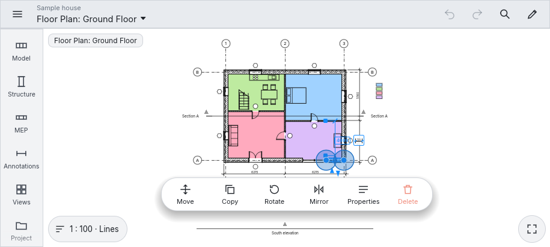

Interface styles
BIMopen has two interface styles and a touch mode. All of them run the same commands, with the same names, keyboard shortcuts and results; only the look and the place of the tools change.
- The BIMopen style, described in The interface and pictured throughout this manual: the rail, the tool panel, the command search, the element panel and the strip of views. BIMopen starts in this style.
- The Classic style: the ribbon with its tabs, the options bar, the Properties palette and the Project Index in panels.
- Touch mode: the layout for touch screens and pens, on a touch monitor, a tablet or a phone.
Choosing the style
- Click the gear at the right end of the top bar, or open the application menu and choose Options.
- Under User Interface, set Interface to Classic or BIMopen. BIMopen starts in the BIMopen style.
The window changes at once. The choice is remembered, on the desktop and in the browser, and the next session starts in the same style. Theme (Light or Dark) applies to both styles.

In Arabic the whole window is mirrored, in every style: the rail and the tool panel, or the palettes, are on the right, the element panel on the left.
The Classic style

| Part | Where | What it holds |
|---|---|---|
| Title bar | Top | The quick access toolbar (Open…, Save, Undo, Redo and the tools you add), the project and the active view, the light or dark theme and the ? menu |
| Ribbon | Under the title bar | File, which opens the application menu, then the tabs (Model, Structure, Metal, Prefabrication, MEP, Link and import, Annotations, Check, Massing & site, Collaborate, Views, Project) with their groups of buttons, and the contextual tab while a tool works or something is selected |
| Options bar | Under the ribbon | The options of the active tool, as the options strip of the BIMopen style, and at its right end what the tool expects or the element under the cursor, the selection count and Select and Drag; right-click it for Dock at Bottom |
| Properties and Project Index | Left | The element panel's Properties tab, and the Project Index of Views, as panels that dock on either side or float |
| Drawing area | Centre | The views, each with its view control bar at the bottom (scale, detail, crop, isolate) and the navigation bar on its right edge (Zoom to Fit, Zoom In, Zoom Out, Zoom Options) |
| Command line | Under the drawing area | The log and the prompt; what you type in a view goes there |
| Views and families strip | Bottom | The same strip as in the BIMopen style |
The rail entries of the BIMopen style hold the ribbon's tabs: Create the tabs from Model to Massing & site, Document the sheets of Views and Annotations, Views the rest of Views and the Project Index, Coordinate Check and Collaborate, Settings Project.
Everything of the Classic style
Every function of the Classic style is in the BIMopen style, once:
- every button of the ribbon is a tile of the tool panel, in the rail entry that holds its tab, and the contextual Modify tab is the card on top of the panel while a tool works or something is selected;
- BIMopen's mark at the top of the rail opens the application menu; the top bar has undo, redo, the quick access tools and the ? menu;
- Views holds the whole Project Index, with its menus;
- a thumbnail of the view strip can be dragged onto the open sheet, or onto a sheet's thumbnail, and its right-click menu has the browser's actions and Open in the active window;
- the view selector's menu arranges the view windows (Switch View, Tile, Cascade, Maximize, Replicate, Close Hidden); Ctrl+Tab goes to the previous window;
- the right button on a tile offers Add to Quick Access Toolbar: the tool shows in the top bar, works from any section of the rail, and its right button offers Remove from Quick Access Toolbar;
- the key tips work as on the ribbon: tap Alt (or press F10), then a tab's letter opens the rail section that holds it (its letter shows on the rail) and a tool's letters start it.
Touch mode
Touch mode lays the interface out for touch screens and pens: phones, tablets and touch monitors. It runs the same commands as the two styles, with the same names; only the layout changes, and every control is big enough for a finger.
Turning it on
Options ▸ User Interface ▸ Touch mode has three values:
| Value | Effect |
|---|---|
| Automatic | On where the device is touch first: in a browser with a finger as pointer or a window at most 900 pixels wide, and on Android. On the desktop it stays off |
| Always | Always on, on the desktop too (a touch monitor, a tablet PC) |
| Never | Never on |
BIMopen remembers the choice with the other preferences. Menu ▸ Leave touch mode brings back the other interface until the next start.
Phone, landscape and tablet
The layout follows the room the window has.
On a touch monitor, or any wide window (here 1920 × 1080): the rail on the left opens a palette of tools for each category (Model, Structure, MEP, Annotations, Views, Project), the properties stay on the right, the views and families strip at the bottom, and the Command or search field in the top bar, beside Undo, Redo and Pen.

On a tablet, upright (800 × 1280) or sideways (1280 × 800): the same layout as on a monitor. Where the window is narrow the properties are put away, to leave the room to the drawing: Properties in the top bar brings them back.


On a phone, upright (narrow and tall): a compact top bar with the menu, the project and the view (a tap opens the views), Undo, Redo, Command or search and Pen; the drawing takes the whole width; five big buttons at the bottom, Views, Families, Tools (Modify while something is selected), Properties and Commands, each opening a sheet from the bottom. Drag the sheet's handle up to make it taller, down to make it smaller or close it; a tap outside closes it.

On a phone sideways (short and wide): a rail on the left with the categories Model, Structure, MEP, Annotations, Views and Project, plus the views and the properties; the sheets open on the right.

The tools are large tiles with an icon and a name. A tool still to come is greyed, Not available yet; a tool that does not work in the 3D view (Level, Grid, Reference Plane, the annotations) is greyed there, Not available in the 3D view. A tap on a greyed tile says why.
While a tool works, a green strip under the top bar shows its options and Done, which ends it
(or finishes a sketch). While you draw a wall, Length… opens the command line: type the length
of the next wall and, if needed, its angle, as 4.5 or 4.5 90.
A tap selects, and the selected walls show big grips at their ends. Over the drawing a floating bar offers Move, Copy, Rotate, Mirror, Properties and Delete; a long press opens the context menu. At the bottom left the view button shows the scale and the graphic style and opens Scale, Detail, Graphic style, Sun and shadows, Crop and Isolate Temporarily; at the bottom right Zoom to Fit.
Gestures and the pen
| Gesture | What it does |
|---|---|
| tap | selects, or places the point of the active tool |
| drag with one finger | as a mouse drag: a selection window, a grip, an element |
| long press | the context menu |
| two fingers | pan; pinch to zoom; in the 3D view twist to turn the model |
| double tap | fits the view in the window |
Pen in the top bar is for a pen: the pen draws and selects, fingers only move the view (one finger pans, two fingers pan, zoom and turn). A pen palette on the side of the drawing has Select, Wall, Door, Window, Detail line, Aligned, Text and More tools…. In a browser a pen is told from a finger by the browser; in the desktop app a touch that reports a pressure is taken for a pen.